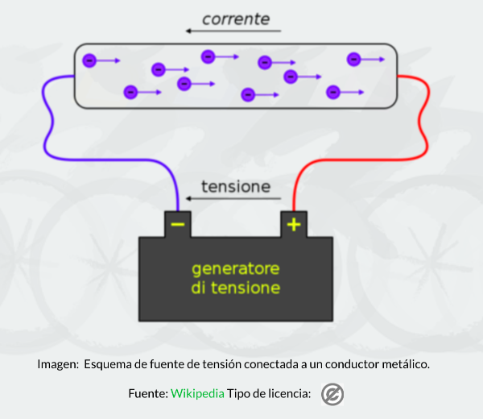
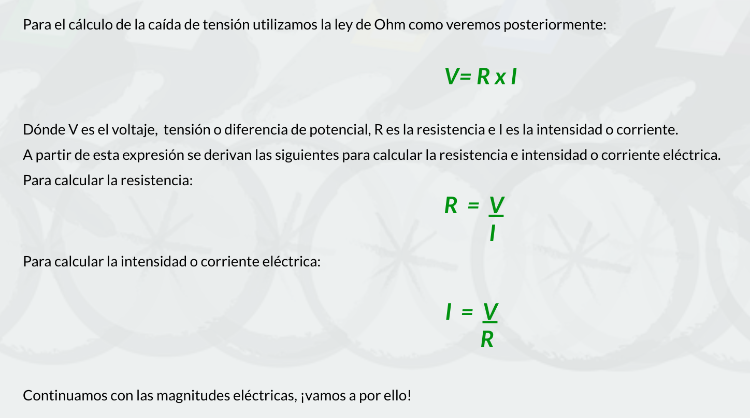

Denominado también como tensión (en la imagen tensione) o diferencia de potencial es una magnitud física que impulsa a los electrones a lo largo de un conductor en un circuito eléctrico cerrado, provocando el flujo de una corriente eléctrica.
En el Sistema Internacional de Unidades, la diferencia de potencial se mide en Voltios ( V ).
Podemos decir que es la "fuerza" que la pila da a los electrones para que recorrran el circuito eléctrico.
Caída de tensión: Si tenemos una pila de 10 V y tres bombillas conectadas en serie (una a continuación de otra), los electrones que recorren esas tres bombillas, al "salir " de la pila salen con un potencial de 10 V, después de pasar por la primera bombilla esos electrones tienen menos energía (es como si la bombilla fuera una valla de atletismo y el electrón un atleta, después de saltar la valla el corredor tiene menos energia). A esa pérdida de energía del corredor lo llamamos caída de tensión. y también se mide en voltios.

Canal de Youtube de Charly Explica

Capturas realizadas del recurso original El Tour de la Factura Eléctrica